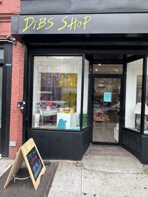
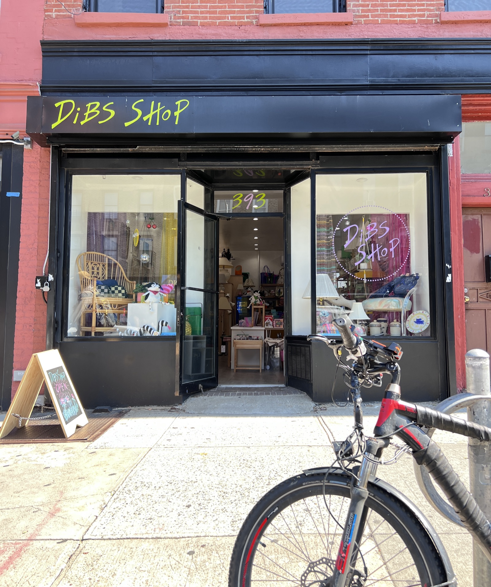
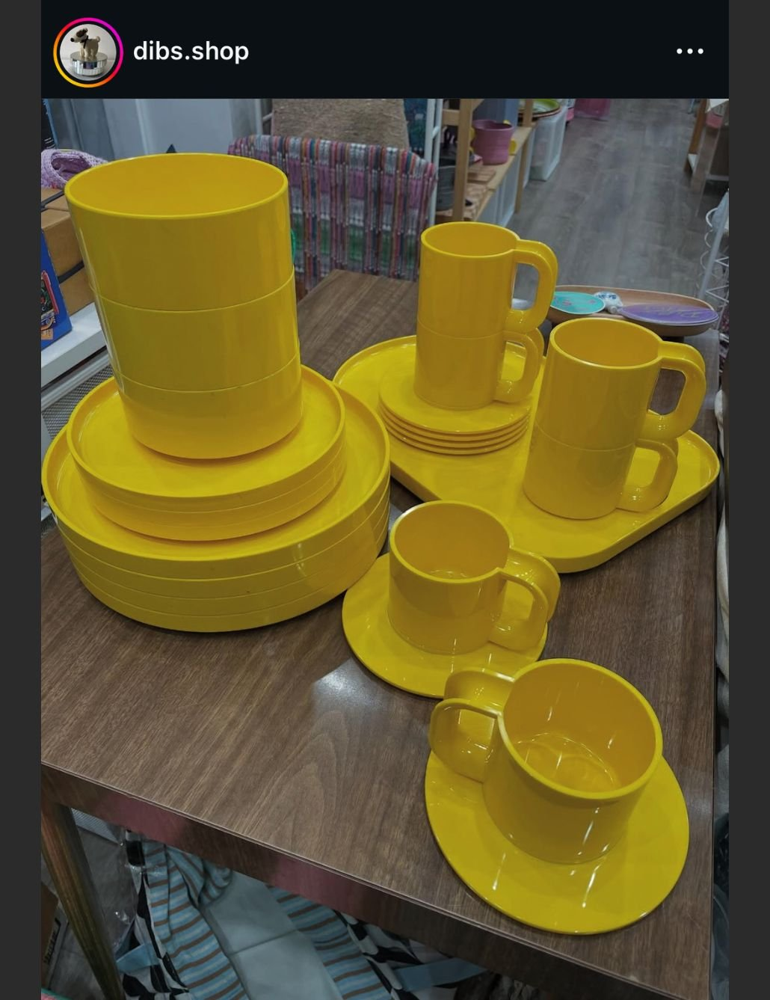

Vintage Home Goods
Hall china, lamps, art, ceramics, and pieces that make people ask where you found them.
Park Slope, Brooklyn
Vintage and new home goods, gifts, and surprise finds, picked by a TV/film propmaster in Park Slope.
393 5th Avenue, Brooklyn, NY 11215
Green + pink are always invited.
Small storefront. Packed shelves. Furniture, tableware, art, pantry items, cards, and the thing that makes a room feel like yours.
The Story
Alexis Weiss spent years as a property master on TV and film sets, with credits including Billions, Mr. Robot, Master of None, A Quiet Place Part II, Girls5eva, and more.
That job is all about finding, styling, and placing the right objects so a scene feels true. At Dibs Shop, the set is a colorful Park Slope storefront, and you get to take the pieces home.
Green and pink show up throughout the shop, along with a mix of vintage finds, new goods from independent brands, and surprises from NYC TV and film productions.
A vintage and new home goods gift shop curated by a TV and film Propmaster!
Owner-verified Locavore listing

What You'll Find
Dibs is built for browsing in person. The mix changes often, and the best way to see what is new is to visit or follow @dibs.shop.
Hall china, lamps, art, ceramics, and pieces that make people ask where you found them.
New goods from independent brands, mixed in with vintage so the shelves feel lively and personal.
Cards, gifts, and wrapping supplies in one stop, so the whole thing feels pulled together.
Serving dishes, tableware, and kitchen pieces made for dinner tables, shelves, and housewarmings.
Furniture lives here too, tucked into a compact storefront packed with things for the home.
Pantry items and food products that can turn a vintage serving dish into a full gift.
Vintage art and art collections for the wall, shelf, or corner that needs a little story.
Scented candles, accessories, floor mats, and small surprises with color and personality.
Surprises from NYC TV and film productions, picked with the same eye Alexis brings to set work.

Color First
Visitors call out the color, the uniqueness, and how intentional the mix feels. That is the point: a shop that feels styled, not sterile.
Visit
Press & Love
Featured in the 2026 edition with an owner-verified listing.
Included in the December 2025 guide to 25 local shops and makers across the five boroughs.
Covered the opening announcement and included Dibs in its local second hand and vintage guide.
Described Dibs as "unlike anything that's opened in the neighborhood in years."
The mix feels intentional, not random.
The colors are a big part of the draw, and the products feel unique.